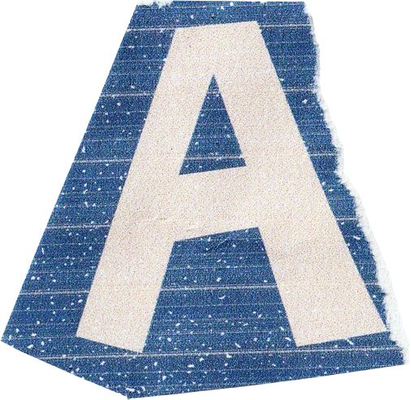
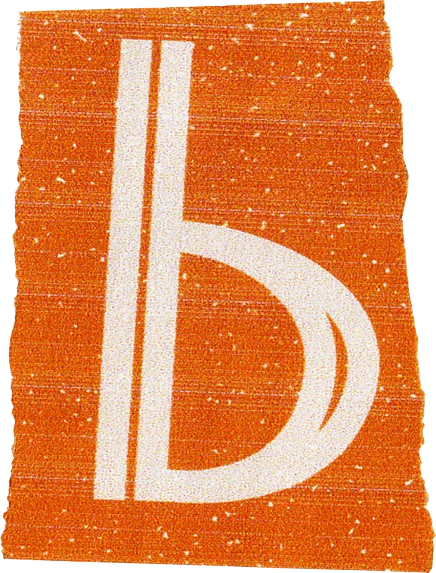
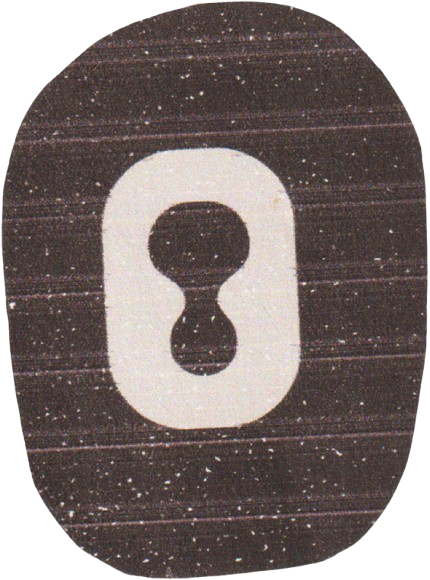
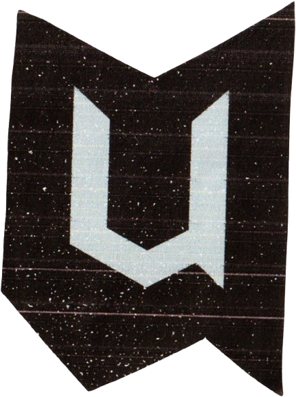
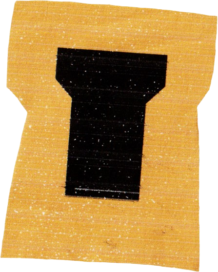
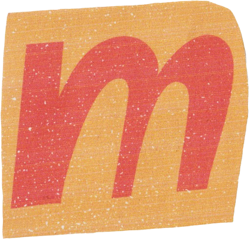
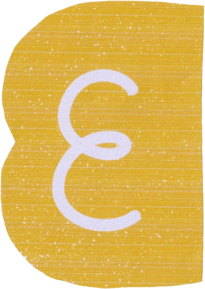

Right now
Preparing for university and practising CAD, modelling and Python through small projects.







I'm an incoming Civil Engineering student who likes understanding how things work, then figuring out how they can work better. I'm especially interested in how structures, transport and public spaces shape the way people experience the places around them.
A lot of my interests sit between technical and creative work. I enjoy maths and physics, alongside mapping, visual design and turning information into something clear and useful. I've been exploring tools such as GIS and CAD, usually through small projects where I can learn by actually making something. I'm particularly interested in sustainable and resilient infrastructure. Some of my projects have led me to explore urban flooding, drainage and SuDS, including how mapping and digital technology can help identify problems and develop better responses. Outside engineering, music is a big part of my life. I play bass, read a lot, go hiking and climb. I tend to become interested in something and want to understand it properly, whether that's a new piece of music, a book, a place I'm exploring or a project I'm working on.
I'm still at the beginning of my engineering journey, so this portfolio is a record of what I'm learning, what I'm making and where my interests take me.
| Current stage | Incoming Civil Engineering student |
|---|---|
| A-levels | Mathematics, Physics and Geography |
| Main focus | Building strong technical foundations |
| Portfolio goal | Document projects and visible progress |
| CAD + BIM | AutoCAD, Revit, Civil 3D |
|---|---|
| Data + mapping | Excel, GIS |
| Code | Python, HTML, CSS, JavaScript |
| Working style | Research, sketch, test, improve |
| I enjoy | Designing, photography and exploring new places |
|---|---|
| I value | Curiosity, independence and clear communication |
| I learn best by | Trying ideas, making mistakes and improving them |
| Next goal | Documenting more university and personal projects |
I built this website directly with HTML, CSS and JavaScript rather than using a portfolio template. I planned each page, wrote the layouts and interactions, organised the project files, and used my own images and textures throughout. The main reason for making it this way was to develop practical coding skills by working through real design problems.
Most of my research came from Google, YouTube and Reddit. I also used AI when I needed an explanation, help understanding an error or guidance on what to learn next, but it did not generate the finished website for me. I would use AI again as a support tool because it can save time, but I still want to understand the code and be able to build and change things myself.
Preparing for university and practising CAD, modelling and Python through small projects.
Structures, transport, mapping, construction and the small design choices that change how a place works.
I like to understand the problem first, organise the information, test an idea and improve it.
Coursework experiments, software practice, engineering ideas and notes on what I learned.
Keep building, document more clearly and turn practice into finished work.